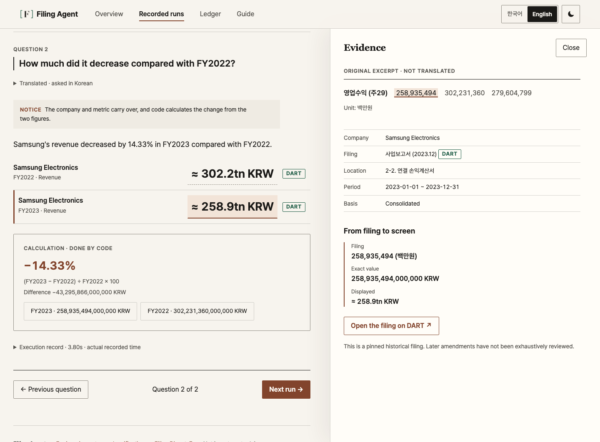

Web · AI · Personal project · Sep–Nov 2026
Filing Agent
A local app for asking about and comparing figures from selected past company filings. AI reads each question, and code picks the data, does the math and writes the answer.
- Python
- FastAPI
- LangGraph
- PostgreSQL
- React
- 120 Korean and English runs passed
- 2.96 s median response time · M1 Pro
- 15 filing figures verified
- Question
Each request carries a request_id, so the same request is processed only once even if it arrives twice. A failed question can be retried once.
- Intent
The local Gemma model only returns what the question is asking, in a fixed format. The parser rejects responses that contain an unknown company or a value outside the allowed set, and the model never sees the figures.
- Evidence · Math
Code decides which filing figures to use and does the calculation. Amounts are calculated with Decimal and rounded to two decimal places, and evidence sources are limited to two: DART (Korea's corporate filing system) and the US SEC.
- Storage
LangGraph step progress is saved to PostgreSQL checkpoints. Research documents are updated under a row lock.
Should the model do the arithmetic?
In model experiments, the model described increases and decreases wrongly even when it picked the right evidence. So the model only interprets the question, and code selects the evidence, calculates with Decimal and writes the financial answer in Korean or English.

The public demo replays saved runs and accepts no new questions. Built with AI agents: I planned the work and reviewed the results, and the agent wrote the evaluation scenarios.